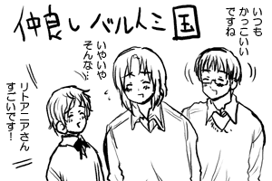
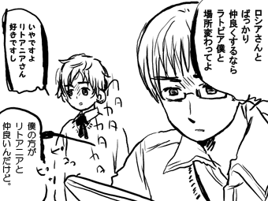
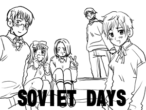
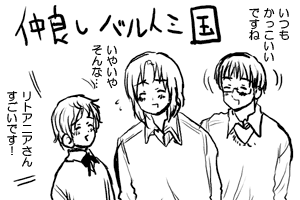
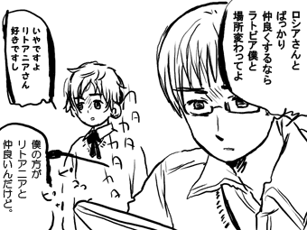
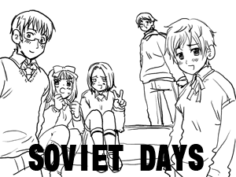

■バルト三国がまとまったのって一回だけなような■   最近、バルト三国のラトビアとエストニアの仲が 怖いことになってるようです。 お互いリトアニアばっかり褒めて 二国間の関係は静かに対立してる模様。 でも肝心のリトアニアがポーランドばかり 見ているので、この二国はどうなるんでしょうか。  ソビイズ。下手すると死ぬ。 好きなヤンデレ言葉でも入れてください 面白い情報ありがとうございました。 ■らくがき■   |
||
■バルト三国がまとまったのって一回だけなような■   最近、バルト三国のラトビアとエストニアの仲が 怖いことになってるようです。 お互いリトアニアばっかり褒めて 二国間の関係は静かに対立してる模様。 でも肝心のリトアニアがポーランドばかり 見ているので、この二国はどうなるんでしょうか。  ソビイズ。下手すると死ぬ。 好きなヤンデレ言葉でも入れてください 面白い情報ありがとうございました。 ■らくがき■ |
||